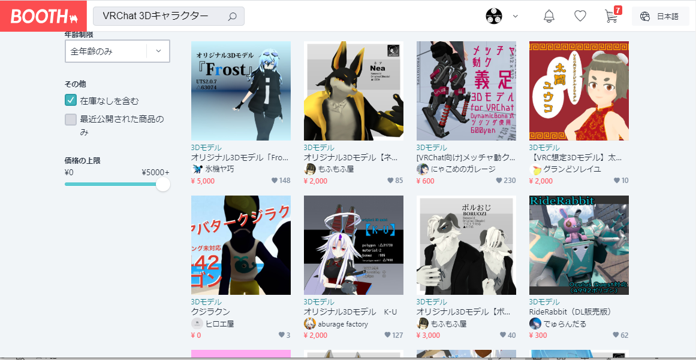
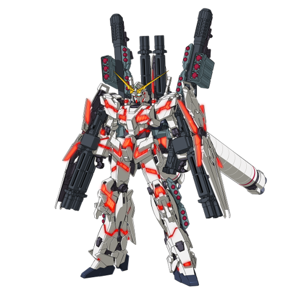
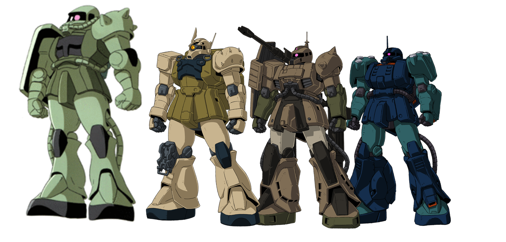

1.VRChatのアバター用3Dモデルへのユーザーニーズの抽出
調査方法
- アバター用3Ｄモデルのストアで人気のあるモデルを調査
- VRChat上で出会った利用者の口コミを収集

調査結果
- 造形のクオリティが高い
- シンプルでカスタマイズしやすい
- ユーザーがパーツやアクセサリーを後付するイメージを持ちやすい
例えれば、造形の完成度は高いがカスタマイズの自由度が低いガンダムタイプよりは、シンプルで汎用性の高いザクタイプが好まれる
 